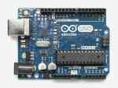
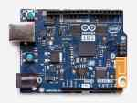
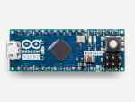
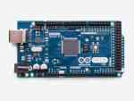

Arduino is an open-source physical computing platform based on a simple i/o board and a development environment. Arduino can be used to develop stand-alone interactive objects or can be connected to software on your computer. The open-source IDE can be downloaded for free, and operates on all popular platforms.

Uno
UNO is the best board to get started with electronics and coding. If this is your first experience tinkering with the platform, the UNO is the most robust board to experiment with. The UNO is the most used and documented board in the Arduino family

101
Arduino 101 combines the ease-of-use of the classic boards with the latest technologies. The board recognises gestures, and features a six-axis accelerometer and gyroscope. Control your projects with your phone over Bluetooth connectivity!

Micro
Micro is the smallest board of the family, easy to integrate it in everyday objects to make them interactive. The Micro is based on the ATmega32U4 microcontroller featuring a built-in USB which makes the Micro recognisable as a mouse or keyboard.

Mega
Arduino Mega is a microcontroller board based on the ATmega2560. It has 54 digital input/output pins (of which 14 can be used as PWM outputs), 16 analog inputs, 4 UARTs (hardware serial ports), a 16 MHz crystal oscillator, a USB connection, a power jack, an ICSP header, and a reset button. It contains everything needed to support the microcontroller; simply connect it to a computer with a USB cable or power it with a AC-to-DC adapter or battery to get started.